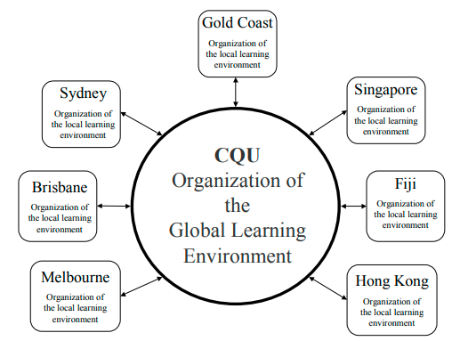

In this chapter, the authors identify forces leading to change in industries
in the online world, including increasing global competition, increasingly
powerful consumers and rapid changes in technology. In the higher education
industry, outcomes are evolving, but include the formation of alliances,
outsourcing and re-engineering of systems and work practices. The commu-
nication and information technologies that created the online world also link
lecturers, tutors, and teaching resources to create the possibility of networked
education. The authors outline a “glocal” networked education paradigm that
separates out global and local resource development and global and local
learning facilitation. By embracing this separation, it is possible to develop
ways of working that allow the creation of a flexible model of education
delivery that is scalable and hence globally competitive. In this model, the
work of the university academic is changed considerably. The functions
traditionally performed by a single university academic are differentiated
and are performed by a network of learning facilitators. In this scenario,
university academics may find themselves responsible for the learning of
hundreds of students, but they may never find themselves face-to-face
with a single student.
As the world moves online, pressure increases on industries and organi-
zations to change the way they do business. According to Turban, McLean and
Wetherbe (1999), pressures acting on industries and organizations result
from: the market, technology, and society. Market pressures include global
competition and consumers who are becoming more demanding; technologi-
cal pressures include the use of e-commerce to lower the costs of production
and transaction costs; and societal pressures include government regulations
and economic conditions (for example, through the use of subsidies, tax
policies, and import/export regulations).
The higher education industry and universities are subject to the same
pressures as other industries and organizations in the online world. For
example, in Australia, enrollment of foreign students was the country’s eighth
largest export earner during 1997/8 earning A$3.1 billion [the larger ones
being: coal (A$9.5b), tourism (A$8.0b), transport (A$6.7b), gold (A$6.2b),
iron (A$3.7b), wheat (A$3.6b) and aluminium (A$3.2) (AVCC, 2000)].
Because of the Internet, Australian universities must now compete with
universities from other countries offering online programs to those students
in their own countries. So universities must change the way they do business.
Those institutions that can step up to this process of change will
thrive. Those that bury their heads in the sand, that rigidly defend the
status quo - or even worse - some idyllic vision of a past that never
existed, are at very great risk.…The real question is not whether
higher education will be transformed but rather how and by whom?
(Duderstadt, 1999, p.1)
To understand how universities need to be transformed, it is necessary to look
at the impact of distance education in the online world on higher education
organizational structures and work groups, including organizational roles,
workgroup dynamics, and communication. It is also necessary to examine which
structures and processes are needed to allow a university to exist and prosper in
an age of globalization and rapid changes in the information technology underly-
ing remote education and work. This chapter tackles these issues using a model
based on Giddens’ (1977) theory of structuration in which process (activity) and
structure are reciprocally constitutive, and the application of this theory to
information technology by Orlikowski and Robey (1991). Central to this model
is the view that change is not solely “technology led” or solely “organizational/
agency driven.” Instead, change arises from a complex interaction between
technology, people and the organization.
The authors then consider, as a case study, Central Queensland Univer-
sity (CQU), which is a university in Australia that is responding to the
challenge of remote education and operation on a national and international
basis. CQU has been a distance education and on-campus education provider
since 1974 and is now Australia’s fastest growing university. Inherent in all
CQU’s operations is a model in which the organization, its members and its
partners are all constituents of a “glocal” network of learning facilitators.
In considering the implications of the online world for industry, it is
necessary to consider both structure and process, where process includes
change processes (Gregor & Johnston, 2000; 2001; Johnston & Gregor,
2000). For example, one defining characteristic of an industry structure is the
degree to which vertical integration has occurred. Vertical integration and
alliances are formed by negotiation over periods of time. The result is a
structure that becomes formalized to some extent. Further activities and
processes are needed to maintain the alliance and modify it as needed.
In Giddens’ theory of structuration, process (activity) and structure are
reciprocal (Giddens, 1977, 1984, 1991). As Giddens (1977, p. 121) states,
“Social structures are both constituted by human agency, and yet at the same
time are the very medium of this constitution,” or as Rose (1999, p. 643) puts
it, “Agents in their actions constantly produce and reproduce and develop the
social structures which both constrain and enable them.”
This link between process and structure is also important at the
organizational level. In order to develop technology and systems to
survive in the online world, an organization must engage in certain
processes, such as business process re-engineering. These processes are
of great importance – many information systems fail and exhibit the
productivity paradox (Brynjolfsson & Hitt, 1998). This paradox refers to
the fact that investment in Information Technology appears to be unre-
lated to increased outputs. One explanation of the productivity paradox is
that some organizations do not pay sufficient attention to processes within
their organization when introducing new technology. If organizational
change is not implemented well, and work processes not redesigned, the
new systems do not lead to gains in productivity. Organizations that gain
in productivity appear to be those in which there is a restructuring of the
organization and flatter, less hierarchical structures with decentralized
decision-making.
Thus, it is necessary to consider change and processes of change as well
as structure. The authors have a particular view of organizational change. This
view is that change is “emergent.” Change is not solely “technology led” or
solely “organizational/agency driven.” Change arises from a complex inter-
action between technology and the people in an industry or organization
(Markus & Robey, 1988).
The conceptual model developed here is based on the structurational
theory of information technology of Orlikowski and Robey (1991). This
model posits four relationships: (1) information technology is a product
of human action; (2) information technology is an influence on human
action; (3) organizational properties are an influence on human interac-
tions with information technology; and (4) information technology is an
influence on the organization. The model is extended to include the
market, technological and societal influences from the external environ-
ment that affect an organization
So what are the implications of the online world for industry structure and
process? Barriers to participating in electronic transactions are decreasing.
Rather than having networks only link existing trading partners in a tightly
coupled environment, new electronic markets can easily include larger
numbers of buyers and sellers (Malone, Yates & Benjamin, 1987).
On the other hand there is evidence for hierarchical arrangements
supported by electronic networks, with firms in many industries reducing the
number of their suppliers, and entering into contractual arrangements for the
supply of goods. These arrangements constitute supply chain management.
The arguments from economic theory for the changes in market structures are
complex. Holland and Lockett (1994) propose an “anything goes” ior mixed-
mode hypothesis where firms develop different forms of market and hierar-
chical relationships that are maintained simultaneously. The interrelation-
ships and interdependencies of governance structure, asset specificity, market
complexity and coordination strategy will determine interorganizational
arrangements (Klein, 1998).
A value chain consists of the movement of components through various
stages of production and distribution as they are transformed into final
products. A firm can decide to produce each of the goods and services needed
along the value chain in-house or to outsource it. There is a view that greater
use of interorganizational networks will lead to vertical disintegration and
greater outsourcing. For example, instead of an organization having its own
IT department, it may outsource this function to a specialist IT service
provider. However, evidence to support this view is still being collected
(Steinfeld, Kraut & Chan, 1998). Some expect disintermediation to occur,
where intermediaries are removed because of the ease with which they can be
bypassed on electronic platforms. For example, retailers and wholesalers can be
bypassed by the customer placing orders online directly with the manufacturers.
It is not clear, however, that disintermediation will always occur. Instead, different
forms of intermediaries may emerge; e.g., a cybermediary such as Amazon.com
which to some extent replaces the traditional intermediaries, namely, book shops.
It appears that maximum benefit is obtained from e-business when it is
integrated with other applications in the organization. This integration can
require re-engineering of the way in which the organization does business. E-
business reduces the costs of handling paper-based information. For example,
the cost to the U.S. Federal government of a paper check was 43 cents
compared to two cents for an electronic payment (Turban, McLean &
Wetherbe, 1999). Small companies can use the Internet for marketing and
compete against firms globally at comparatively little expense. Employees
can work from home or from different parts of the globe. Teams can be linked
with electronic communication.
To summarize, the implications of the online world for industry include:
market transformations, the need for alliances, changes in outsourcing
behavior, and changes in the role and type of intermediaries. In addition, the
need for re-engineering and the manner in which organizational change is
approached must be considered carefully.
What are the implications for higher education?
Universities and the higher educational sector face similar challenges to
other industries in the online world.
Universities are due for a radical restructuring. After centuries of
evolutionary changes, they are faced with carving out new roles and
methods to get there. Today the predominant model is still the
combination of traditional teaching and academic research as
mapped out by Wilhelm von Humboldt in the last century. The
guiding principles of Humboldt’s vision of the university are
forschung und lehre (research and teaching) and of professors,
einsamkeit und freiheit (solitude and freedom). But change is
unavoidable and pressure for change is increasing from the public,
the media, and political groups. This change is mainly driven by the
new technological possibilities and the new learning environments
they enable.
(Tsichritzis, 1999, p.93)
Specific implications for universities can be drawn from the conceptual
model based on the structurational theory of information technology of
Orlikowski and Robey (1991):
• Organizational change arises from a complex interaction between tech-
nology and the people in the organization. For example, information
technology makes possible new learning environments and changed
work practices for university staff.
• Information technology can influence changes in organizational struc-
ture. The improved communication options offered by advances in
information technology support the formation of alliances and the
“unbundling” of the functions of the university (content, packaging and
presentation). This vertical disintegration, in which functions are differ-
entiated and either outsourced or dealt with by partners in strategic
alliances, creates new intermediaries in the learning/teaching network.
There is evidence of organizational change arising from the interac-
tion of technology and people in some universities. In Australia, online
and videoconferencing systems are being developed as alternatives to
face-to-face communication where the people are physically dispersed.
These methodologies require both staff and students to change existing
work practices and to acquire new literacies (Wallace & Yell, 1997). The
new technological possibilities (and new learning environments that arise
from the interaction between technology and the people) include: the
Internet (facilitating synchronous and asynchronous interactions between
learners); videoconferencing (facilitating tutorials comprising distributed
groups of students, and also remote access to live lectures); digital
libraries (as knowledge repositories); computer simulation (substitutes
for laboratories); etc. Overall, the interaction of these new technologies
with the people creates a learning environment in which learners, tutors
and learning resources can all be networked.
These same technological possibilities also permit new working environ-
ments for those responsible for the facilitation of learning. Thus lecturers can
use the Internet for synchronous and asynchronous communication with
colleagues, videoconferencing for meetings, digital libraries for research. The
interaction of these new technologies with the people creates a teaching
environment in which lecturers, tutors and teaching resources can all be
networked.
There is also evidence of changes in organizational structure that have
been influenced by information technology. Traditionally, universities have
carried out all the functions relating to the provision of higher education:
content production; packaging content; credentialing programs; presentation
to students; marketing; registration, payment and record keeping; and assess-
ment. In the online world, these functions can more readily be “disintegrated”
and the university can specialize in those functions which it regards as its
“core business,” forming alliances for other functions or outsourcing to new
intermediaries in the value chain
The marketing of a university’s programs can be outsourced to a
company that specializes in researching the market and promoting the
university. Recruitment can be better accomplished close to the student, and
in the case of international students, in the student’s mother tongue by agents
overseas. Library facilities could be provided by new intermediaries close to
the students or provided online by cybermediaries. Fee payment, especially
online payment, can similarly be outsourced to a cybermediary. If an institu-
tion is offering on many sites and many countries, then outsourcing invigilation
and related examination administration is necessary. Sylvan Learning Sys-
tems (2001) is an example of an organization specializing in the function of
assessment in the education value chain. Based in the USA, it offers com-
puter-based testing services to educational institutions, for example the
Graduate Management Aptitude Test (GMAT) and the Test of English as a
Foreign Language (TOEFL).
Research, of course, can be conducted by others outside universities, so
there is really no reason why this activity couldn’t be outsourced. But it could
be argued that there is a nexus between research and teaching in universities
that is essential for higher education.
The functions of course development and materials development are
perhaps the ones seen as most likely to remain with universities. But there are
those who even suggest the need for outsourcing and alliances for the
performance of these functions. Gibbons (1998, p.61) predicts that universi-
ties “will learn to make use of intellectual resources that they don’t own fully.
This is the only way that they will be able to interact effectively with the
distributed knowledge production system.”
In the higher education industry there is an increasing number of
instances of institutions delivering the content of others. UNext is an internet-
based distance learning ‘university’ which utilizes content developed by the
London School of Economics, the University of Chicago, Colombia, Stanford
and Carnegie Mellon Universities, and delivers Master of Business Admin-
istration (MBA) degrees to the corporate sector. UNext also handles the
global marketing and management of the programs (UNext, 2001). Western
Governors University (WGU) was formed in 1996 by the governors of the
western USA to share higher education distance learning resources. It offers
online access to over 500 distance education courses from over 40 higher
education institutions. It assesses students and awards degrees, but its
programs are produced and delivered by the participating institutions (WGU,
2001).
Gibbons (1998, p.61) suggests that a university should be regarded as “a
sort of ‘holding institution’ in the field of knowledge production, perhaps
limited to accrediting teaching done primarily by others while in research
doing their part by forming problem-solving teams that work on fundamental
issues.” This view sees the core business of the university as participating in
knowledge production and credentialing the teaching programs of others. But
if so many functions are outsourced, then an important new function must be
added to the work of the university – the function of organizing the learning
space – bringing all the outsourced functions together to facilitate learning by
the students. Indeed, one could say that the organization of the learning space
perhaps becomes the central function of the university.
As the various functions of the higher education process are differentiated,
so too the nature of work and the workforce change (Coaldrake & Stedman, 1999).
The authors now consider a case study that illustrates this change.
Central Queensland University (CQU) is a regional university in Austra-
lia that is responding to the challenge of the online world. With 15,000
students, CQU is now Australia’s fastest growing university in terms of
international students. Only 25% of its students were in grades 11 and 12 in
Australia during the last two years; the remainder are mature-aged or
international students. In other words, CQU has a diverse student population
quite unlike that of “traditional” universities.
In Central Queensland, CQU’s traditional catchment area, Rockhampton
is the location of the main campus; Mackay campus 350 kilometres to the
North; Gladstone campus 120 kilometres to the South; Emerald campus 280
kilometres to the West; and Bundaberg campus 330 kilometres to the South.
A key component of this integrated network of campuses is the Interactive
System-Wide Learning (ISL) system – a synchronous video link that facili-
tates networked learning. Thus, on these campuses, classes are taught using
combinations of synchronous video delivery of live lectures, videoconferencing
to connect distributed groups of learners, web-delivery, synchronous and
asynchronous computer-mediated discussions, and face-to-face classes.
CQU has been a distance education provider since 1974. Distance
education students are serviced with a combination of printed, CD-ROM and
web-delivered material, as well as electronic asynchronous communication
for class discussion and mailing lists.
CQU formed an alliance with a commercial partner, Campus Manage-
ment Services, to establish campuses at Sydney in 1994, Melbourne in 1996
and more recently in Brisbane and the Gold Coast. At these campuses the
students are mostly of international origin. In addition, there are campuses
operating in Singapore, Hong Kong and Fiji. At all these campuses, the CQU
programs are tutored by locally appointed academic staff, specifically em-
ployed for teaching rather than research. The mode of delivery is face-to-face
for tutorials and lectures, supported by the distance education resource
materials produced by the CQU academic staff in Central Queensland
Inherent in the CQU educational partnership with Campus Management
Services is a model in which the function of content production has been
detached from other functions traditionally carried out by the university (for
example, lecturing). This vertical disintegration, in which functions are
differentiated and either outsourced or dealt with by partners in strategic
alliances, creates new intermediaries in the value chain.
For both on-campus and distance education modes, CQU has moved to a
networked learning paradigm, using communication and information technolo-
gies to link learners and learning resources. But it has also moved to a networked
teaching paradigm that links lecturers, tutors and teaching resources.
There are inherent dangers, however, in globalization coupled with the
facility to network all teachers and learners. Inappropriate structures and
processes for this global network have the potential to create stress for the
individuals at the CQU campuses. When becoming more global, it is impor-
tant to take care that the models used for teaching are scalable—for example,
one coordinator in Rockhampton should not be dealing with a mailing list
comprising one thousand students from all over the world.
There are also fears that the globalization of higher education could
lead to a global western academic homogeneity—yet another wave of
cultural imperialism. But the fear that global higher education will destroy
indigenous cultures fails to acknowledge that other forms of communica-
tion between cultures have existed for hundreds of years, and the fact that
cultures survive such transculturation is evidence of cultural ‘resistance’
and ‘adaption’ (McQuail, 1994).
The intensifying of worldwide social relations sets up dialectical ties
between the global and local, such that what happens in any
particular milieu is an expression of, but also can often stand in
contradistinction to, distanciated social forms.
(Giddens, 1991, p. 210)
So, when becoming more global, it is important to take care to create
a system which does not seek to undermine cultural ‘resistance’ and
‘adaption,’ but which instead is responsive to the knowledge, culture and
needs of the local learners. One aspect of this process is the
“internationalising” of the curriculum to allow local knowledge and
culture to be incorporated and valued.
To overcome the dangers mentioned above, it is important to move to
a “glocal” meta-model in which the staff in each faculty of CQU are
responsible for the organization of the global learning environment whilst
the educational partners are responsible for the organization of the local
learning environment (see Figure 1). Hence the portmanteau expression
“glocal” – it is global and local at the same time.
Figure 1: The "Glocal" model of networked learning
